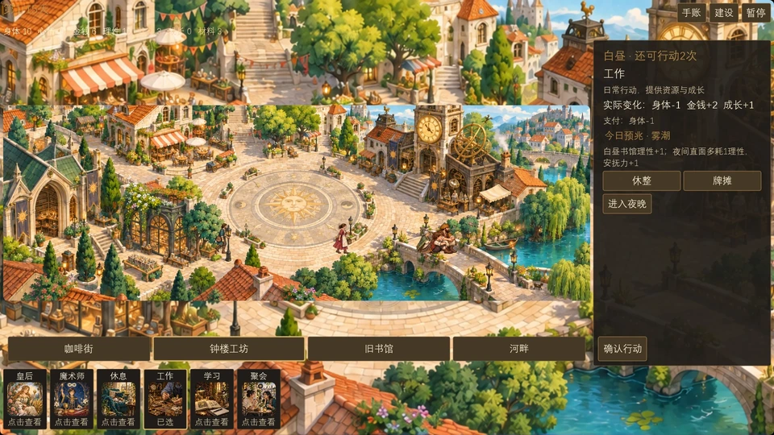
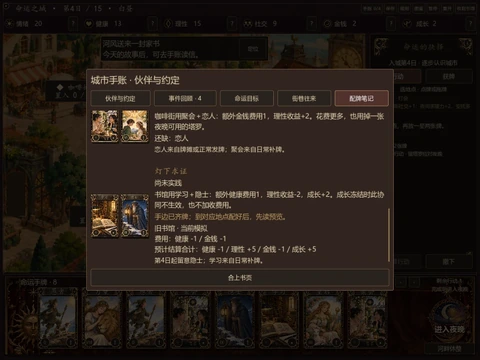

把留牌变成昼夜之间的选择
用掉一张牌可以解决眼前的资源问题，留下它则为夜晚保留一种应对方式。费用、实际变化和夜间危险放进结算前的预览，玩家可以先比较，再作决定。
TAPTAP MAKER / 个人 AI 游戏实践
塔罗卡牌策略 / 分支叙事
在十五天的旅程里，白天用牌来工作、休整和建设街区，夜晚用留在手中的塔罗逆位应对梦魇。同一张牌，今天用掉还是留到今晚，是每个白昼都要做的决定。

TapTap 横屏公开测试
GAMEPLAY / 核心体验
在咖啡街、钟楼、书馆和河畔之间分配行动。选地点、搭配手牌，先看费用和效果，再确认结算。白天用掉的牌无法带到夜里，留下的塔罗逆位后会改变用途与代价。30 张牌、15 段章节与 45 个剧情选项，把每晚的生存压力和城里的长期选择连在一起。
TAPTAP GALLERY / 游戏展示图
前四张画面含首图，来自 TapTap Maker 0.1.9 的横屏运行采集。后四张标有 Windows，来自对应版本的桌面验收。
点击任意截图可查看原图。 多张画面可左右滑动，也可聚焦图库后使用方向键浏览。



DESIGN / 规则与取舍
用掉一张牌可以解决眼前的资源问题，留下它则为夜晚保留一种应对方式。费用、实际变化和夜间危险放进结算前的预览，玩家可以先比较，再作决定。
推荐旅程从三张起始牌开始。守灯人先带玩家完成选地点、放牌和确认，再在第一夜引导逆位应对。情绪、健康和金钱先出现，理性、社交及城建随后按进程引入。
章节把不同选择放在并列图卡上。画面先交代人物和行动，文字列出费用和后果。结算时保留选中的插图，让玩家能把结果和刚才的选择对应起来。
Windows 开发版把树下休息、广场交谈、工坊送货和河桥散步安排到不同区域。夜里减少活动，店铺开合与灯光跟随场景变化。咖啡馆门口加入错峰通行，住户跨过门槛时由门框遮挡。
MY PRACTICE / 项目推进
我设定了十五日战役、少牌开局和分段教学的方向，并逐轮调整手牌布局、结算可读性、剧情图卡和市民行为。我用 AI 协助实现这些设计，再以实际界面和操作路径检查反馈。例如，把“数值太多”拆成起始手牌数量、资源出现顺序和行动前预览三个可验证的改动。
TAPTAP / 游戏入口
支持在 TapTap 移动客户端打开横屏试玩。建议从「渐进入城」开始，跟随守灯人体验首个昼夜。